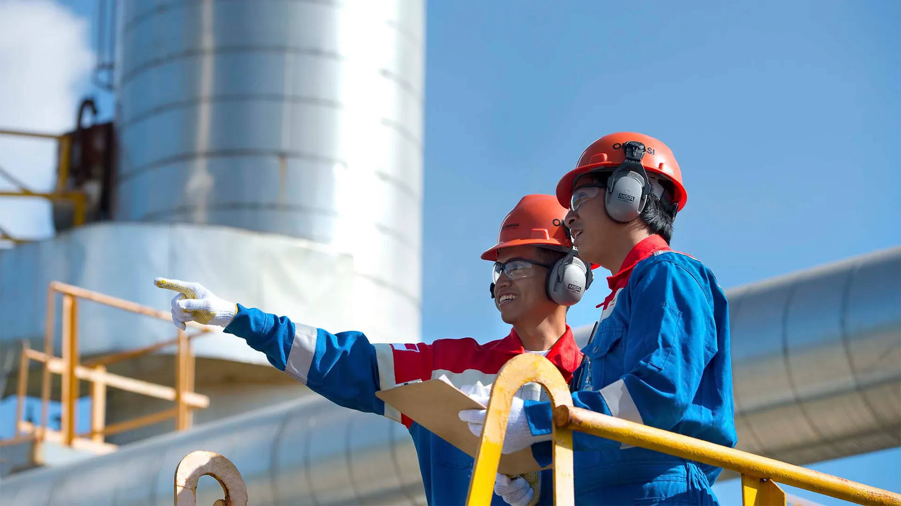
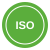
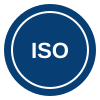

Beranda / Penghargaan
Penghargaan dan Sertifikasi
Apresiasi dan sertifikasi atas kinerja, inovasi, keselamatan, serta pengelolaan lingkungan PHE WMO.
Penghargaan dan sertifikasi
- PROPER Emas2016-2017. Perusahaan migas lepas pantai pertama yang meraihnya.
- Penghargaan SubrotoBidang Efisiensi Energi, 2021.

ISO 50001:2018Sistem Manajemen Energi.
ISO 14064Perhitungan dan pelaporan emisi gas rumah kaca.- Gold Award ICQCC 2025Taipei, proyek GEN-MT.
- Patra Nirbhaya Karya Utama2017. Penghargaan keselamatan kerja atas pencapaian jam kerja aman.
- Penghargaan Tata Biwara2016. Penghargaan bidang pengelolaan lingkungan dari BLH Gresik.
- Penghargaan 3 Bintang APQO2016. Pengakuan atas pencapaian program peningkatan kualitas.